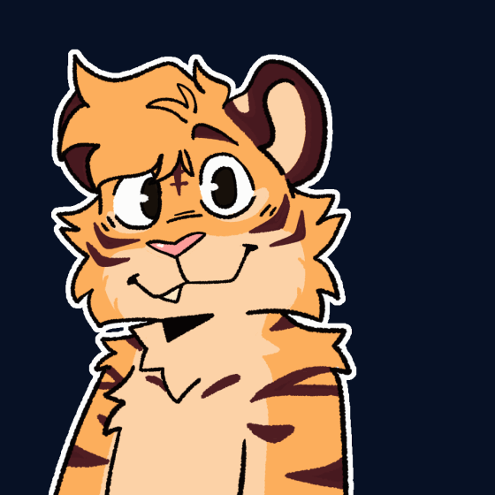
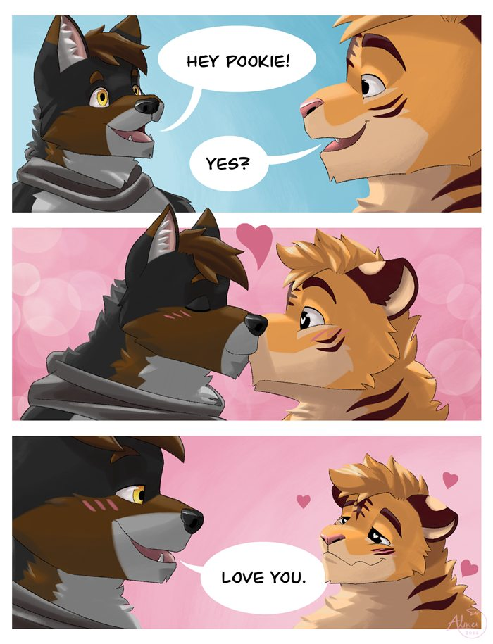

The agreed design for the public site, “Tigy’s Album”. Everything below is drawn with the mockup’s own
stylesheet (open the mockup). The written version is apps/public/DESIGN.md.
Every colour comes from Tigy’s coat: fur, cream from the muzzle and chest, maroon from the stripes and pink from the paw pads. Dark mode swaps the roles instead of adding colours.
The Coat Rule. A new colour needs a place on Tigy to come from.
The Pink Pad Rule. Paw pink marks things you press and Tigy’s own accents; never a background for content.
The Night Swap Rule. At night the page becomes stripe maroon, text becomes cream, and the fur becomes the accent.
Grandstander for names and headings, Nunito for everything you read or press.
The Two Voices Rule. Grandstander is only for names and headings. Anything a visitor reads or presses is Nunito.
Three steps, all gently rounded, plus the circle where Tigy is round.
The Three Steps Rule. Corners are 6px, 8px or 16px; nothing in between. Full circles are reserved for faces, the tail and the paw thumb.
The signature shapes. They live on the frame of the page, never over a piece of art.
One long tapered stroke crossed by two shorter ones. The logo mark, before the wordmark.
Tapered strokes entering from both edges; the divider between the header and the gallery.
On the primary button and the switch thumb; three of them walk up a tile on hover and while loading more.
The scroll timeline: fur and maroon rings with a dark tip. Marks years, can be dragged; a bottom bar on phones.
The live pieces, as they appear in the mockup. Hover them to see their states.
Primary maroon (fur at night), paw pink for things you press, light cream for quiet actions. 8px corners, a ledge underneath, a springy lift on hover.
The sticky filter row above the gallery. Active filters and the sort show as live chips; these pickers are shown but inactive until they are built.
Tags on the credits panel; badges in the top-left corner of a tile.
Simple Icons logos in the text colour, with the handle. On phones they become 46px logo-only buttons. Home header only; there is no footer.
Interface icons are Lucide only, with round line ends and a slightly heavier line, in the current text colour.
Social logos are Simple Icons, always in one colour. Tigy's own shapes (forehead mark, paw, stripes) are drawn, not icons.
The theme button cycles Automatic, Light and Dark. The NSFW switch has a paw thumb and turns pink when on (try it).
52px paw-pink buttons with 8px corners on either side of the stage.

Tigy portrait8px corners, the piece at its real shape. On hover: lift, title label, paw prints.

The open piece always sits on a calm dark stage with 8px corners; the credits are a flat cream panel beside it.
Mostly flat. Only things you can press get a ledge; tiles lift on hover. Motion is small and springy.
cubic-bezier(0.34, 1.3, 0.64, 1): presses and liftscubic-bezier(0.16, 1, 0.3, 1): fades and the viewerThe One Set Rule. Every interface icon comes from Lucide at one line weight. Social logos and Tigy’s own shapes are the only exceptions.
The Press Rule. Only things you can press get a ledge. Text, panels at rest and the art itself stay flat.